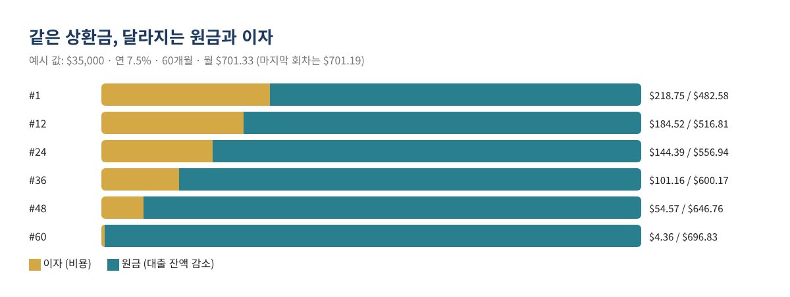
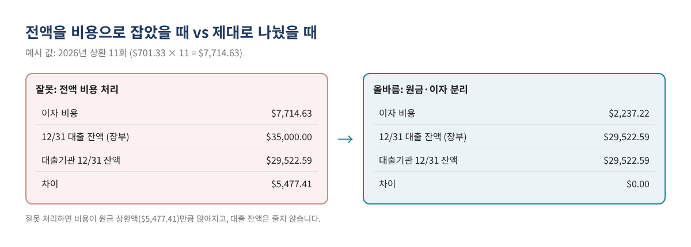
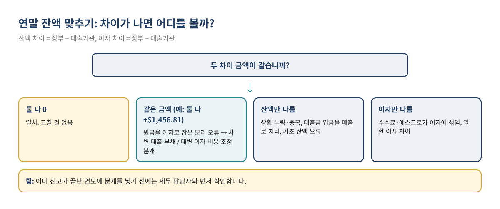

대출 상환금, 전부 비용으로 잡고 계신가요? 원금·이자 나누고 연말에 대출 잔액 맞추는 법
장비 대출, 차량 대출, 사업 운영 대출을 받은 사업체 장부에서 가장 자주 보이는 실수는 매달 나가는 상환금 전액을 "이자 비용"이나 "대출 상환" 같은 비용 계정으로 처리하는 것입니다. 이렇게 하면 비용이 부풀려지고, 대차대조표의 대출 잔액은 처음 빌린 금액에서 줄지 않습니다. 연말에 대출기관 명세서와 비교하면 수천 달러씩 차이가 나는 이유가 대부분 여기에 있습니다.
이 글은 상환금을 원금과 이자로 나누는 원리, 엑셀로 직접 계산하는 방법, QuickBooks Online과 Desktop에서 두 줄로 기록하는 방법, 그리고 연말에 대출 잔액을 대출기관과 맞추는 순서를 예시 숫자로 정리했습니다.
이런 분께 필요합니다: 사업 대출 상환금을 매달 기록하는 사장님, 장부의 대출 잔액이 명세서와 맞지 않는 분, 연말 마감 전에 대출 계정을 정리하려는 분.
1. 상환금은 두 부분으로 나뉩니다
일반적인 분할 상환 대출의 매달 상환금에는 이자(그 달의 차입 비용, 비용 처리)와 원금(남은 빚을 줄이는 돈, 대출 부채 계정에서 차감)이 섞여 있습니다. 상환 초기에는 이자 비중이 크고, 뒤로 갈수록 원금 비중이 커집니다.

2. 엑셀로 원금·이자 직접 계산하기
대출기관의 상환 스케줄이 없어도 엑셀이나 Google Sheets로 계산할 수 있습니다. 매달 이자 = 직전 잔액 × 연 이자율 ÷ 12, 원금 = 상환액 − 이자, 새 잔액 = 직전 잔액 − 원금입니다.
| 셀 | 내용 | 수식 (예시) |
|---|---|---|
| B1 | 대출 원금 | 35000 |
| B2 | 연 이자율 | 0.075 |
| B3 | 상환 횟수(개월) | 60 |
| B4 | 월 상환액 | =ROUND(PMT(B2/12,B3,-B1),2) → 701.33 |
| C7 | 1회차 이자 | =ROUND(B1*$B$2/12,2) → 218.75 |
| D7 | 1회차 원금 | =$B$4-C7 → 482.58 |
| E7 | 1회차 후 잔액 | =B1-D7 → 34,517.42 |
2회차부터는 이자 수식의 잔액을 직전 행의 잔액(E7)으로 바꿔 아래로 복사합니다. 마지막 회차는 반올림 때문에 상환액이 조금 다를 수 있습니다(이 예시에서는 $701.19).
주의: SBA 대출이나 신용한도(LOC)처럼 이자를 일 단위로 계산하는 대출은 위 계산과 몇 달러씩 차이가 납니다. 이 경우 명세서에 나온 이자 금액을 그대로 쓰는 것이 정확합니다.
3. QuickBooks에 두 줄로 기록하기
QuickBooks Online
Intuit 도움말 "Set up a loan in QuickBooks Online"에 따르면 대출 계정은 All apps → Accounting → Chart of accounts → New에서 만들고, 회계연도 안에 갚는 대출은 Other Current Liabilities(Detail: Loan Payable), 그보다 긴 대출은 Long Term Liabilities(Detail: Notes Payable)를 고릅니다. 메뉴 위치는 자주 바뀌므로 보이지 않으면 검색창에 "Chart of accounts"를 입력합니다.
- 돈이 나간 은행 계좌로 상환 거래(Check 또는 Expense)를 만듭니다.
- 1번 줄: 대출 부채 계정 — 원금 금액.
- 2번 줄: 이자 비용 계정 — 이자 금액.
- 수수료가 있으면 3번 줄에 따로 넣습니다.
- 은행 피드에 출금이 내려오면 새로 추가하지 말고 이 거래와 매칭합니다.
QuickBooks Desktop
Intuit 도움말 "Manually track loans in QuickBooks Desktop" 기준으로 Banking → Write Checks의 Expenses 탭에서 1번 줄은 대출 부채 계정과 원금, 2번 줄은 이자 비용 계정과 이자를 입력합니다. 같은 도움말에 따르면 Loan Manager는 QuickBooks Desktop 2022에서 중단되었고 그 이전의 지원 버전에서만 쓸 수 있으므로, 최신 버전에서는 직접 나눠 입력해야 합니다.
4. 따라 해 보기: 장비 대출 예시
가상의 사업체가 2026년 1월에 장비 대출 $35,000(연 7.5%, 60개월)을 받고 2월 1일부터 매달 $701.33을 갚았습니다. 모든 숫자는 예시 값입니다.
| 회차 | 날짜 | 상환액 | 이자 (비용) | 원금 (부채 감소) | 상환 후 잔액 |
|---|---|---|---|---|---|
| 1 | 02/01/2026 | $701.33 | $218.75 | $482.58 | $34,517.42 |
| 2 | 03/01/2026 | $701.33 | $215.73 | $485.60 | $34,031.82 |
| 3 | 04/01/2026 | $701.33 | $212.70 | $488.63 | $33,543.19 |
| … | … | … | … | … | … |
| 11 (12월) | 12/01/2026 | $701.33 | — | — | $29,522.59 |
| 2026 합계 | $7,714.63 | $2,237.22 | $5,477.41 |

5. 연말에 대출 잔액 맞추기
- 대출기관의 12/31 명세서나 연간 요약에서 원금 잔액과 올해 이자를 확인합니다.
- 12/31 기준 Balance Sheet에서 대출 계정 잔액을 확인합니다.
- 이 대출의 이자 비용 연간 합계를 확인합니다.
- 잔액 차이(장부 − 대출기관)와 이자 차이(장부 − 대출기관)를 구합니다.
- 두 차이가 같은 금액이면 원금을 이자로 잡은 분리 오류이므로 아래 조정 분개로 둘 다 고칩니다.
| 예시: 상환 3회를 전액 이자로 처리한 경우 | 대출기관 | QuickBooks | 차이 |
|---|---|---|---|
| 12/31 원금 잔액 | $29,522.59 | $30,979.40 | $1,456.81 |
| 2026년 이자 | $2,237.22 | $3,694.03 | $1,456.81 |
| 계정 (12/31 조정 분개) | 차변 | 대변 |
|---|---|---|
| Loan payable (대출 부채) | $1,456.81 | |
| Interest expense (이자 비용) | $1,456.81 |

6. 특수한 경우
- 이자만 내는 기간(Interest-only): 그 기간의 상환금은 전액 이자입니다. 원금 줄은 0이고, 원금 상환이 시작되는 달부터 두 줄로 나눕니다.
- 풍선 상환(Balloon payment): 마지막에 큰 금액을 한 번에 갚는 대출은 마지막 상환금 대부분이 원금입니다. 대출기관이 알려 준 잔액으로 원금 줄을 채웁니다.
- 에스크로·보험료가 포함된 상환금: 부동산 담보 대출처럼 세금·보험료 적립금이 섞인 경우 세 번째 줄로 따로 기록합니다. 원금 줄에 넣으면 대출 잔액이 실제보다 빨리 줄어듭니다.
- 추가 원금 상환: 정해진 상환액보다 더 낸 금액은 모두 원금입니다. 이후 회차의 이자가 줄어드므로 스케줄을 다시 계산합니다.
- 신용한도(LOC): 인출과 상환이 반복되므로 고정 스케줄 대신 매달 명세서의 이자와 잔액을 기준으로 기록합니다.
7. 자주 하는 실수
- 상환금 전액을 비용으로 처리
- 대출금 입금을 매출로 처리
- 수수료·에스크로·보험료를 원금 줄에 포함
- 은행 피드 출금을 매칭하지 않고 한 번 더 추가
- 일할 이자 대출인데 계산한 이자를 그대로 사용
- 이미 신고한 연도에 확인 없이 조정 분개 입력
8. 자주 묻는 질문
Q. 대출금을 받았을 때는 어떻게 기록하나요?
입금된 은행 계좌로 입금 거래를 만들고 계정은 대출 부채 계정으로 지정합니다. 매출 계정이 아닙니다.
Q. 대출기관이 상환 스케줄을 주지 않았어요.
위 엑셀 수식으로 계산할 수 있습니다. 다만 일할 이자 대출은 명세서의 이자 금액을 쓰는 것이 정확합니다.
Q. 이미 1년 내내 전액 비용으로 처리했습니다.
연말에 대출기관의 원금 잔액과 장부 잔액을 비교해 차이만큼 조정 분개를 넣는 방법이 가장 간단합니다. 이미 신고한 연도라면 세무 담당자와 먼저 확인하세요.
Q. 이자 비용은 모두 공제되나요?
이 글은 장부 기록 방법을 다룹니다. 공제 여부와 한도는 대출 용도와 사업 상황에 따라 다르므로 세무 담당자와 확인하세요. 차량 대출 이자는 차량 대출 이자 공제 글도 참고하세요.
9. 체크리스트
- ☐ 대출 부채 계정을 올바른 유형으로 만들었다
- ☐ 대출금 입금을 부채 계정으로 기록했다
- ☐ 매달 상환금을 원금 줄 + 이자 줄로 기록했다
- ☐ 은행 피드 출금을 매칭했다 (이중 기록 없음)
- ☐ 12/31 잔액과 연간 이자를 대출기관과 맞췄다
- ☐ 필요한 조정 분개를 연도 마감 전에 넣었다
관련 글
위 과정을 그대로 해 주는 사업 대출 원금·이자 분리 + 연말 잔액 맞추기 키트는 아래 무료 키트 다운로드에서 가입 없이 무료로 받으실 수 있습니다(엑셀 + PDF 가이드).
이 글은 일반적인 교육용 정보이며 세무·법률·재무 자문이 아닙니다. 결과를 보장하지 않으며, 대출기관 명세서가 기준입니다. QuickBooks의 화면과 메뉴 이름은 수시로 바뀌므로 현재 화면과 Intuit의 최신 안내를 확인하세요.
QuickBooks is a registered trademark of Intuit Inc.; not affiliated with or endorsed by Intuit.
무료 키트 다운로드
글에서 설명한 내용을 그대로 따라 할 수 있는 도구입니다. 가입 없이 바로 받으세요.
- Excel 계산 도구 (.xlsx)Loan_Payment_Splitter_2026_EN_KR.xlsx · 63 KB
- 단계별 가이드 (PDF)Loan_Payment_Guide_2026_EN_KR.pdf · 297 KB
본인과 본인 사업에 무료로 쓰세요. 재판매·재배포는 하지 마세요. 일반 정보이며 세무·법률·회계 자문이 아닙니다. 숫자는 본인 자료로 꼭 확인하세요. QuickBooks는 Intuit Inc.의 상표이며 BIZLEX는 Intuit과 관련이 없습니다.